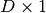
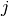

NSDInhomogeneous¶
About the NSDInhomogeneous class¶
The WaveBlocks Project
@author: R. Bourquin @copyright: Copyright (C) 2010, 2011, 2012, 2013, 2014 R. Bourquin @license: Modified BSD License
Inheritance diagram¶
Class documentation¶
- class WaveBlocksND.NSDInhomogeneous(QR=None)¶
- __init__(QR=None)¶
Initialize the numerical steepest descent transformation for quadrature of highly oscillatory overlap integrals.
Parameters: QR – Typically one uses an instance of GaussHermiteOriginalQR.
- build_bilinear(Pibra, Piket)¶
Convert the oscillator occuring in the integral into a bilinear form .
Parameters: - Pibra – The parameters from the ‘bra’ packet.
- Piket – The parameters from the ‘ket’ packet.
Returns: Three arrays: a matrix of shape , a vector of shape  and a scalar value .
- do_nsd(row, col)¶
Evaluates by numerical steepest descent the integral
 for a polynomial
function
for a polynomial
function  with
with  .
.Parameters: - row – The index
 of the component
of the component  of
of  .
. - row – The index  of the component
 of
of  .
.
Returns: A complex valued matrix of shape
 .
.- row – The index
- get_description()¶
Return a description of this quadrature object. A description is a dict containing all key-value pairs necessary to reconstruct the current instance. A description never contains any data.
- get_qr()¶
Return the QuadratureRule subclass instance used for quadrature.
Returns: The current instance of the quadrature rule.
- initialize_operator(operator=None, matrix=False, eval_at_once=False)¶
Provide the operator part of the inner product to evaluate. This function initializes the operator used for quadratures and for building matrices.
Note that the operator must not have residues and can be maximally polynomial but not exponential.
Parameters: - operator – The operator of the inner product. If None a suitable identity is used.
- matrix – Set this to True (Default is False) in case we want to compute the matrix elements. For nasty technical reasons we can not yet unify the operator call syntax.
- eval_at_once (Boolean, default is False.) – Flag to tell whether the operator supports the entry=(r,c) call syntax.
- initialize_packet(pacbra, packet=None)¶
Provide the wavepacket parts of the inner product to evaluate. Since the quadrature is inhomogeneous, different wavepackets can be used for the ‘bra’ as well as the ‘ket’ part.
Parameters: - pacbra – The packet that is used for the ‘bra’ part.
- packet – The packet that is used for the ‘ket’ part.
- mix_parameters(Pibra, Piket)¶
Mix the two parameter sets and from the ‘bra’ and the ‘ket’ wavepackets and .
Parameters: - Pibra – The parameter set from the bra part wavepacket.
- Piket – The parameter set from the ket part wavepacket.
Returns: The mixed parameters and . (See the theory for details.)
- perform_build_matrix(row, col)¶
Computes by standard quadrature the matrix elements
 for a general function
with .
for a general function
with .Parameters: - row – The index of the component of .
- row – The index of the component of .
Returns: A complex valued matrix of shape
.- row – The index
- perform_quadrature(row, col)¶
Evaluates by numerical steepest descent the integral
for a polynomial
function with .Parameters: - row – The index of the component of .
- row – The index of the component of .
Returns: A single complex floating point number.
- row – The index
- prepare(rows, cols)¶
Precompute some values needed for evaluating the quadrature or the corresponding matrix over the basis functions of
and .Parameters: - rows – A list of all with
 selecting the for which te precompute values.
selecting the for which te precompute values. - cols – A list of all with
 selecting the for which te precompute values.
selecting the for which te precompute values.
Note that the two arguments are not used in the current implementation.
- rows – A list of all
- set_qr(QR)¶
Set the QuadratureRule subclass instance used for quadrature.
Parameters: QR – The new QuadratureRule instance.